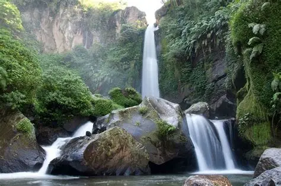
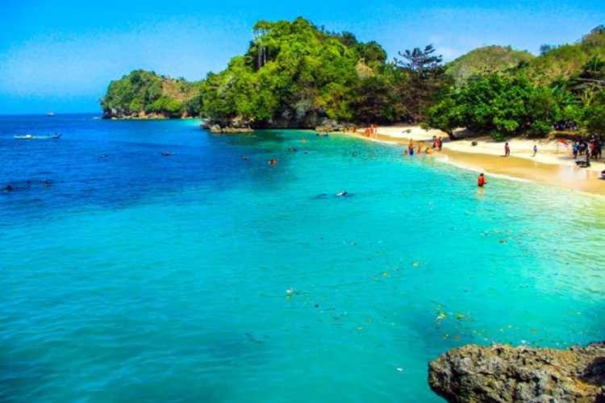

COBAN RONDO : HTM 35-40k
Coban Rondo adalah salah satu air terjun terkenal di Malang dengan ketinggian sekitar 84 meter. Suasananya sejuk karena dikelilingi hutan pinus. Ada wahana labirin, berkuda, panahan, camping, dan spot foto.

PARALAYANG : HTM 400-500K
Lokasinya berada di Gunung Banyak, tempat ideal untuk melihat sunset dan lampu kota di malam hari. Pengunjung juga bisa mencoba wahana paralayang yang aman didampingi instruktur profesional.

PANTAI TIGA WARNA : HTM 10-150K
Terkenal karena gradasi air lautnya: biru, hijau, dan cokelat muda. Berada di kawasan konservasi, kamu bisa snorkeling untuk melihat terumbu karang yang masih terjaga.